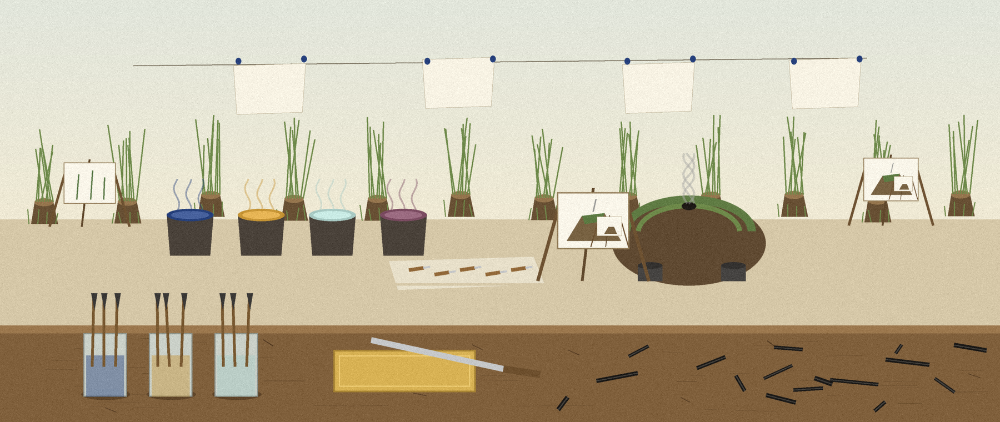

1
Architecture support
Target architecture ARM64 (aarch64). Boot method UEFI only. Target platforms span Apple Silicon Macs, ARM64 servers, and ARM64 development boards.

This repository is the athena-iso.ks kickstart configuration itself, for an Athena OS live image on ARM64.
Athena ARM64 Kickstart: 7 files, 671 counted lines across YAML 394, Markdown 277. .github/workflows/build-arm64-iso.yml carries the most lines. No test files yet: that is the honest gap, and the roadmap in the visuals folder says what the first one should cover.
Target architecture ARM64 (aarch64). Boot method UEFI only. Target platforms span Apple Silicon Macs, ARM64 servers, and ARM64 development boards.
Bootloader: GRUB2 EFI for aarch64 with appropriate modules. Partitioning includes the EFI system partition for UEFI boot. Virtualization guest tools for x86 (VirtualBox, VMware tools) are removed, and x86 only packages such as syslinux are excluded.
Quick build via tag: git tag v1.0.0-arm64 then push the tag. Manual dispatch through the workflow named Build and Release Athena OS ARM64 ISO. Validation only pushes run the grep based checks. Manual build: sudo livemedia-creator --make-iso --ks athena-iso.ks --no-virt --iso-only --iso-name athenaos-live-aarch64.iso --resultdir ./results --releasever 42 --arch aarch64. Prerequisites: an ARM64 system or cross-compilation environment, Fedora's livecd-tools or lorax, and access to Fedora ARM64 repositories.
Legacy BIOS boot is not supported, as most ARM64 systems use UEFI. Scope note for the documented pass: no ISO was built and no workflow was run live; validation is grep based, checking presence rather than parsing.
The configuration uses $basearch variables in repository URLs, which resolve to aarch64 for ARM64 builds, so the correct architecture packages are used. The companion notes live in the appendix: ARM64_CHANGES.md.
$ git clone https://github.com/Epsilon0xCell/Athena-ARM64-Kickstart.git
$ cd Athena-ARM64-Kickstart
From .github/workflows/build-arm64-iso.yml, line 1 on, headed Build and Release Athena OS ARM64 ISO, with its release_tag and fedora_version inputs. It is not tidied for the page.
name: Build and Release Athena OS ARM64 ISO
on:
workflow_dispatch:
inputs:
release_tag:
description: 'Release tag (e.g., v1.0.0-arm64)'
required: true
default: 'v1.0.0-arm64'
fedora_version:
description: 'Fedora release version'
required: true
default: '42'
push:
tags:
- 'v*-arm64'
- 'v*-aarch64'
env:
FEDORA_VERSION: ${{ github.event.inputs.fedora_version || '42' }}
ISO_NAME: athenaos-live-aarch64.iso| File | Lines |
|---|---|
.github/workflows/build-arm64-iso.yml | 205 |
.github/workflows/simple-validation.yml | 170 |
.github/workflows/README.md | 166 |
README.md | 67 |
ARM64_CHANGES.md | 44 |
.gitlab-ci.yml | 19 |
Names doing the work: no named functions in the snapshot.
I sketch my projects on notebook paper so I have to understand them well enough to draw them. The full set, with the counts and how they were counted, is the Athena-ARM64-Kickstart-Visuals folder in the repo. Nothing is drawn over the binder holes. That is a rule, not a style.